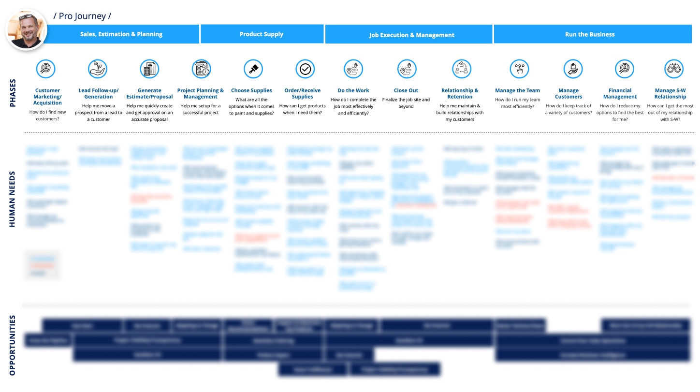

N
E
X
T
→
Sherwin PRO+ APP
Introduction
We were challenged by our Client Sherwin Williams to redesign the
PRO+ APP within 1 and a half months. It includes implementing the
latest design system, reorganizing Information architecture, and
adding new e-commerce and project management functionality. PRO+ is
the name for our registered professional painter customer, they
create 90% of the Sherwin Williams sales, and e-commerce will be an
important growth point for the business.
Team
Angela Swauger - Product Manager
Yuanyuan Hu - Lead Product Designer
Stephan Ginhoven - Product Designer
Katherine Boller - Design Intern
Meghan Lewis - UX Researcher
Angeleena Zacho - Copy Writer
The Challenge
How might we help Sherwin PROs shop from their mobile phone and
enhance brand loyalty.
As many homeowners or property managers will hire a contractor to do
their project, pro is also the people who choose products and buy
products for the project they are doing. 90% of our sales used to come
from that professional customer. Sherwin-Williams provides special
offers and many other tools to help them with their job. Those customers
are relatively slow in adopting technologies, they call their stores and
do many things face to face. Meanwhile, there are also increasingly more
young people stepping into this new industry, they have a totally
different mindset in running their business.
Heuristic Evaluation
What caused the low-adoption rate of the existing APP?
I did a quick heuristic evaluation of this app, it is usable but
definitely not user-friendly. According to my evaluation, what I heard
from users and stakeholders, I identified three main aspects that we
need to work on in this new version.
Communication
- Didn't feel like a an E-comm app
- Didn't reflect Sherwin’s brand
Usefulness
- Lack of functions in the APP
- Lack of connections with store
Usability
- Inefficient workflows
- Information didn't well structured
Job to be done
PRO contractors spend 41% of their time painting, but there is a lot
more beyond painting.
We may think the painting Pro's main job is painting the walls, but
that's not necessarily true. Apart from painting, they spend much of
their time getting new clients bidding for projects and doing overall
management. Not only Sherwin, but many of our competitors also wanted to
provide premiums service that helps them with all the other jobs. That's
an important differentiator for the business and leads to many projects
we have been working on.
Design Challenge
Create a user-friendly and modern-looking APP that caters to pro's
unique shopping needs and business need.

Bias for Action
I created rapid information architecture and end-to end prototype to
flush out the requirements.
Rapid IA:
We have a lot to achieve in this project. We wanted to be focused and
deliver sooner but also do not want to lose any great thoughts.
Firstly I lead a brainstorming session with stakeholders to list all
the features we want to have, regardless of the effort it will take.
Then, I guided people to prioritize, what to achieve now, near, and
future - so we have a clear road map that helps us all be on the same
page. Taking all the ideas and features from the brainstorming and
some regular features that we need for a typical Ecomm app, I quickly
made this high-level Information architecture. That helped us all have
a clear view of what we are designing and be able to divide and
conquer.
E2E Flow:
Since the key role of this app is to help users shop Sherwin's
products. I thought about the end-to-end flow since the beginning. I
love to build prototypes even with lo-fi wires and let people try them
rather than just look at them. Even it is just a very early stage
wireframe, it convinces people with some valuable features: Account QR
code, Guest Cart, Account Dash, and the general APP structures.
Overview
Information, only when well structured, brings value.
Customer Obsession
Everything is here, organized for PRO's special needs.
The most important insights we had about Pros are 1. They are
repurchasing the same products. 2. They heavily rely on physical
stores. That is why we prioritize the three tile buttons and store
information. Many PROs don't know Sherwin also provided many other
products other than paints, so I put all the categories at the end for
PROs to explore.
Finding products
Various paths to product detail page, from favorite products to
exploring, from mobile phone to everywhere.
Shopping flow
It's the first time that Sherwin Customers can shop online!
When I designed this shop flow. The key success factor is to make it
extremely easy and to reduce clicks:
1. Coupon: rather than having PROs manually input coupon codes, I
recommended showing available offers while users are checking out.
Pros really like this little feature.
2. Agree and pay: We used to have a separate step for users to check
"Agree on Terms". While researching other applications, I found it
common to combine this two-step, this is then well accepted by the
legal team.
Insist on the Highest Standards
Continuously work with the engineering team to ship the perfect
product.
Hi-Fi Prototype
I created fully clickable prototypes to help engineers to navigate
the whole app, and understand interaction detail.
Specification
I teach engineers to inspect components in Figma. For details that
aren't apparent, I write annotations and provide user flows to
further explain.
UX Q&A
I checked the latest build and collected UX issues to discuss with
Engineers and hosted weekly sync meetings with engineers, and manage
Q&A tickets in Jira.